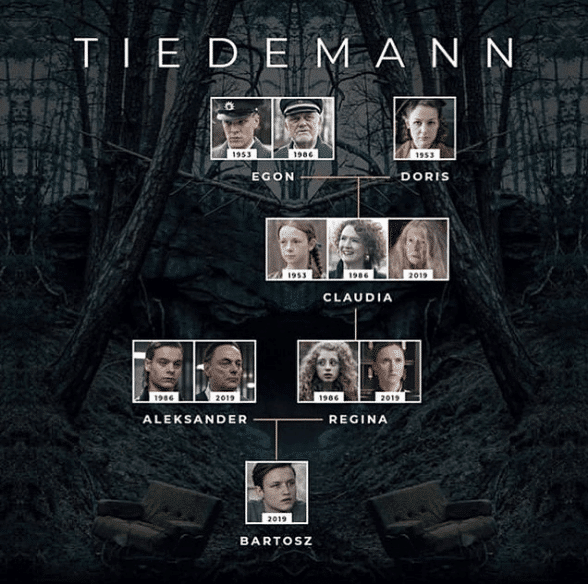
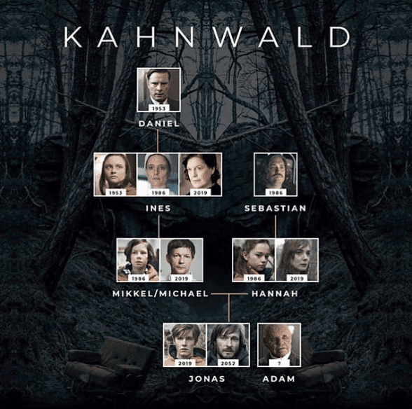
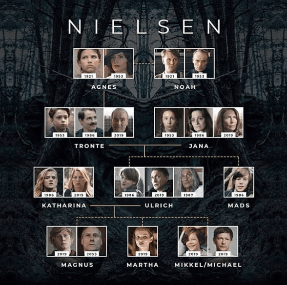
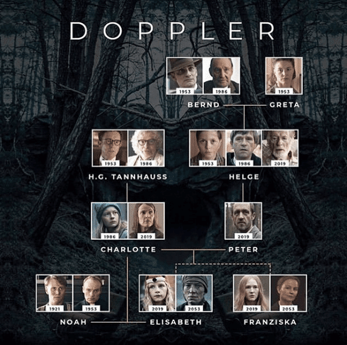

Árbol genealógico

La imagen hasta ahora más completa del árbol genealógico de las familias de Dark aparece en la habitación de Eva en la sede de Sic Mundus, en el mundo paralelo.Dark: Árbol genealógico de las familias en la temporada 3 de la serie de Netflix. Es, por tanto, un árbol que sigue la línea de parentesco de las familias de los dos mundos, del que domina Adam, el mundo en el que se desarrollaron las dos primeras temporadas de la serie, y del que domina Eva, el mundo sin Jonas, que se presenta esta temporada. Dos completos, y complejos, árboles genealógicos, que se juntan en un punto: un símbolo de infinito que representa el nudo, ese lazo que ata los dos mundos y que, a través de Jonas y Martha, los mantiene unidos en un bucle infinito
Familias por separado




Como podes apreciar estas familia solo existen gracias a un bucle temporal, ya que si Mikkel no hubiera vuelto al pasado no podria convertirse en Michael permitiendo asi el nacimiento de Jonas. Por otra parte tambien se encuentra el caso de Charlotte y Elisabeth que son madre de su madre e hija de su hija.